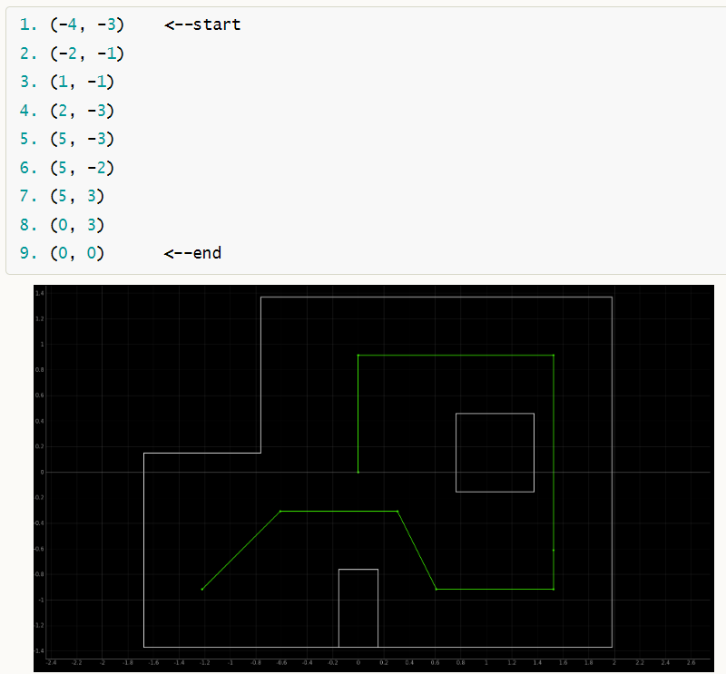

Objective
The aim of this lab is to have the robot navigate through a set of waypoints in a specific map as quickly and accurately as possible. The coordinates of the given trajectory and its schematic representation on the map are shown below.

Design and Implementation
The lab is intentionally designed to be quite open-ended. An ideal solution could be that the robot performs a localization operation each time it moves from one point on the trajectory to the next. This involves rotating 18 times to complete a 360-degree in-axis turn to obtain ToF readings and using this data to execute the update step of the Bayesian filter, as in Lab 11 Localization (Real). If there is an error between the belief matrix of the robot's status on the map and the waypoint on the trajectory, corresponding actions can be taken to try to bring the robot back on track.
However, it was observed that while my robot has no issues performing localization once and can almost perfectly rotate in place, when it needs to perform localization continuously, the deviation in the rotation accumulates. For example, it may think it has rotated 360 degrees (as indicated by the data from the IMU), but in reality, it has already rotated 540 degrees. In such cases, the collected ToF data becomes meaningless and cannot be used for the Bayesian Filter. The issue may be related to the IMU, particularly with the drift calculation at startup not being effectively corrected, leading to accumulating errors over time. Despite trying all possible solutions, the issue remains unresolved. This means the above mentioned approach is not feasible for my robot as it needs multiple localization operations in one run.
Therefore, a simpler method was chosen, which is to directly integrate the two PID controllers done in the previous labs, hardcode the commands of PID controller for distance and orientation according to the trajectory, and perform open-loop control. The entire process is as shown below, with ToF and IMU PID controllers alternately activated. The orientational control simply involves in-axis rotation, while the position control is achieved by specifying the reference distance to make the robot stop at the same distance from obstacles.
The control code sent from the laptop end to the robot is as shown above. Since the PID gain values for ToF and IMU are different, for easier switching between them, a simple function is defined to set Kp, Ki, and Kd as follows:
Results
The gain values of both position and orientation PID controllers are set as shown in the following figure.
The actual test results in the map are demonstrated in the video below. Due to the open-loop control method, the robot is unaware of its actual state and may continue to execute operations based on the ideal state, which can further accumulate error. However, as seen in the video, although the robot missed several points, it still roughly followed the trajectory, demonstrating the feasibility of the the basic functionality. It was observed that the main error in the PID occurred during position control when the robot was at a certain angle to the wall, which means the ToF detection was not perpendicular to the obstacle plane. This could be the main reason that the errors are large and the positioning is not so accurate.
Discussion & Conclusion
The Fast Robots course concludes here. Over the twelve labs, I have reviewed some tools I have used before, including PID control and IMU sensors, learned some new theoretical knowledge and tried to apply it, such as the Kalman Filter and Bayesian Filter. I also gained experience in planning a project from scratch, considering mechanical layout and system design framework. These experiences are invaluable. Many thanks to the course staff for their help and guidance!